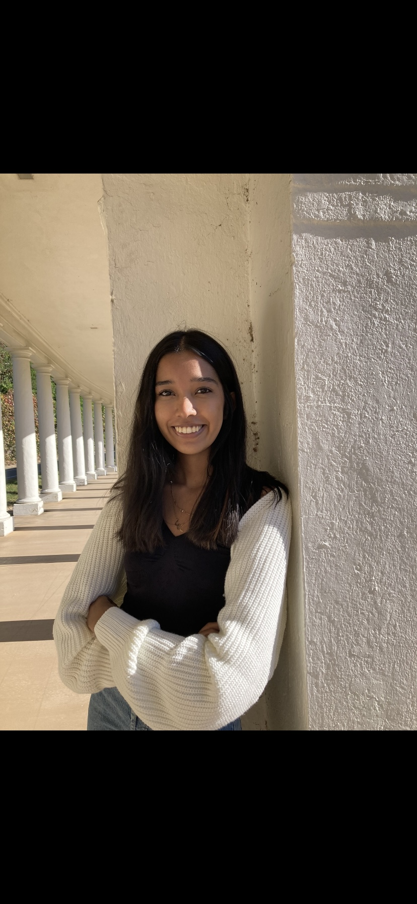

CURRENTLY -
I am pursuing a Bachelor's degree in Computer Science with a minor in Data Science at the University of Virginia, graduating in May 2026.
Hi, my name is Noor Ansari! I am passionate about using technology to solve real-world problems and enjoy tackling complex challenges—whether it is developing software, analyzing data for insights, or exploring the intersection of design, technology, and digital strategy. With experience in multiple programming languages, I am eager to apply my skills in software development, data-driven decision-making, and creative problem-solving. Beyond tech, I am committed to fostering diversity and inclusion in the industry and advocating for equitable opportunities and representation in STEM. I recommend checking out my Projects tab to see some of the projects I have been working on! There, you'll also find links to my LinkedIn and GitHub.
The reason my passion was able to expand this far is because I'm an avid learner. I absolutely love watching experts in the field do their work, and adapting the lessons into my professional life. Contact me if you're interested in learning more!